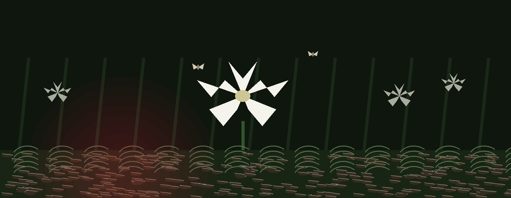
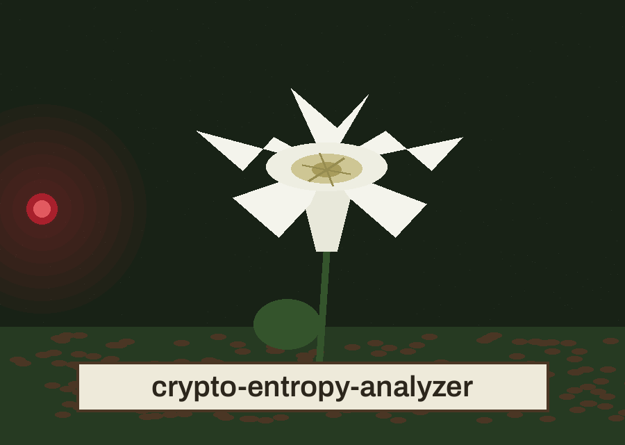
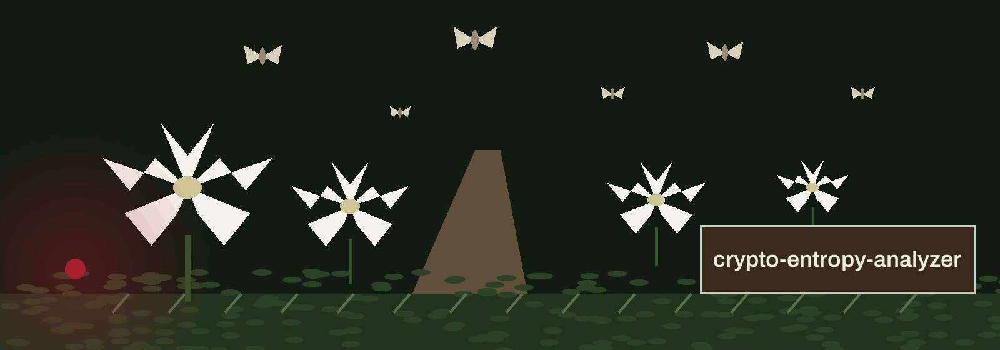

crypto-entropy-analyzer: The Night Pollinator Census
Theme: The Night Pollinator Census. Headings in Big Shoulders Text SC, running text in Archivo.


One Source, One Figure
The program takes one data source, whether that source arrives as the contents of a file read in binary form or as a string supplied directly and encoded before measurement, and it returns the Shannon entropy of that source as a single figure in bits per byte. The figure is logged to four decimal places. Empty input, by an explicit guard in the calculation, yields a figure of nought rather than an error.
No Verdict Is Given
The README frames the figure as bearing upon suitability for use as a seed for cryptographic operations. The program itself delivers no verdict upon that suitability: it pronounces nothing suitable and nothing unsuitable, since no threshold, no comparison, and no judgement of any kind is built into its code.
A Choice the Parser Requires
The working form is python3 main.py with exactly one of the file option or the data option, followed where wanted by the log option. That choice is held in a mutually exclusive group that the parser requires, so a run offering neither and a run offering both are each refused before any measurement begins. The file option is -f and --file; the data option is -d and --data; the log option is -l and --log.
Columns of the Count
The help option, -h and --help, shows a help message and exits. The file is read whole as bytes. The data string is encoded before counting. Where the log option is not supplied, the logs stay upon the console. A caution from the code: logging is already configured at import time in the module, so the later attempt to redirect it towards a file is liable to have no effect. The calculation uses only arithmetic from the standard library, while a requirements file in the repository nevertheless names an external cryptography package, a discrepancy recorded here without resolution.
When the Run Ends
A successful measurement ends without an explicit code, which is to say at nought. A missing file, a file that cannot be read, a type failure, and any unexpected failure each print an error and end the run at one. A parser refusal ends in the usual parser manner. The program offers no table of byte frequencies, no breakdown by character, and no comparison against a second source.
Record preserved from the README
# crypto-entropy-analyzer
Analyzes the entropy of a given data source to assess its suitability for use as a seed for cryptographic operations. - Focused on Basic cryptographic operations
## Install
`git clone https://github.com/ShadowGuard-AI/crypto-entropy-analyzer`
## Usage
`python3 main.py (-f FILE | -d DATA)`
## Parameters
- `-f`, `--file`: Path to the file to analyze. Exactly one of `-f` and `-d` is required.
- `-d`, `--data`: Data to analyze (string).
- `-h`: Show help message and exit
- `-l`, `--log`: Path to the log file. If not specified, logs to the console.
## License
Licensed under the terms in LICENSE.
Facts from the code, stated in the prose
This record names: Shannon entropy, bits per byte, python3 main.py, -f, --file, -d, --data, -l, --log, four decimal places, mutually exclusive, nought for empty input.